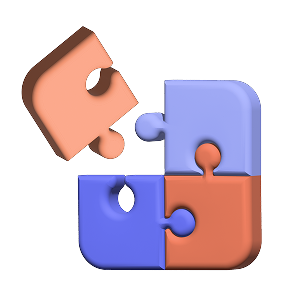
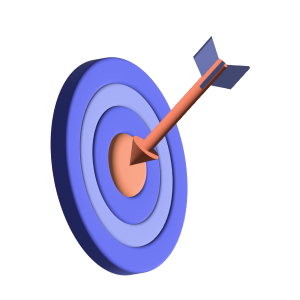
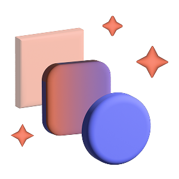

With over eight years of experience in digital curation and interface architecture, I bridge the gap between human intuition and technical capability. Currently shaping future-focused products that prioritize intention over noise.

My priority is architecting interfaces using robust design systems. This guarantees developer velocity and ensures that a user interacting with the product on a desktop receives the exact same quality, cognitive experience as they do on a mobile device.

My design process begins and ends with the data. I use A/B testing, user journey mapping, and a deep understanding of behavioral economics to identify high-leverage friction points, resulting in verifiable business growth.

The best interaction is the one the user doesn't notice. I focus intensely on micro-interactions and intuitive workflows to reduce mental friction. Whether shaping a future voice-enabled system or simplifying a checkout flow, my design goal is to guide the user with such precision that the product feels effortless and instantly familiar.